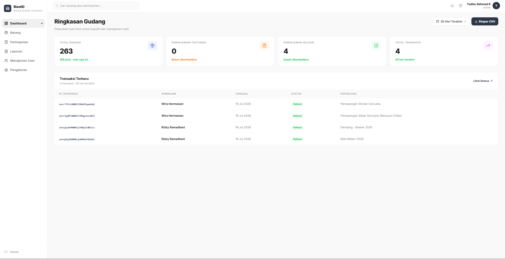
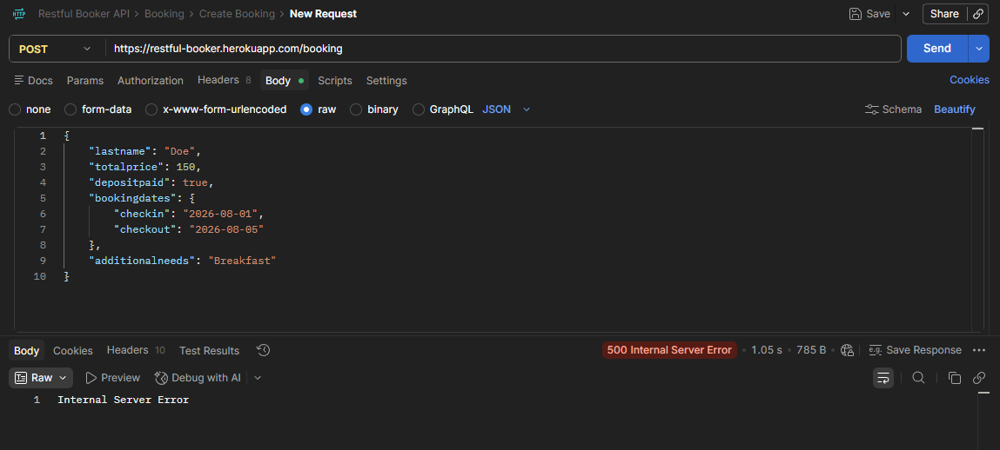
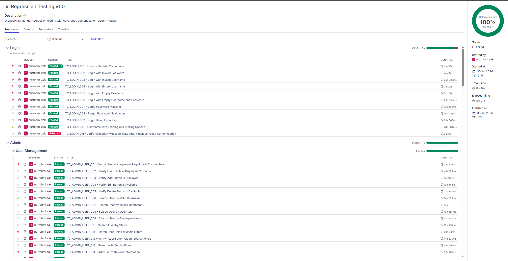
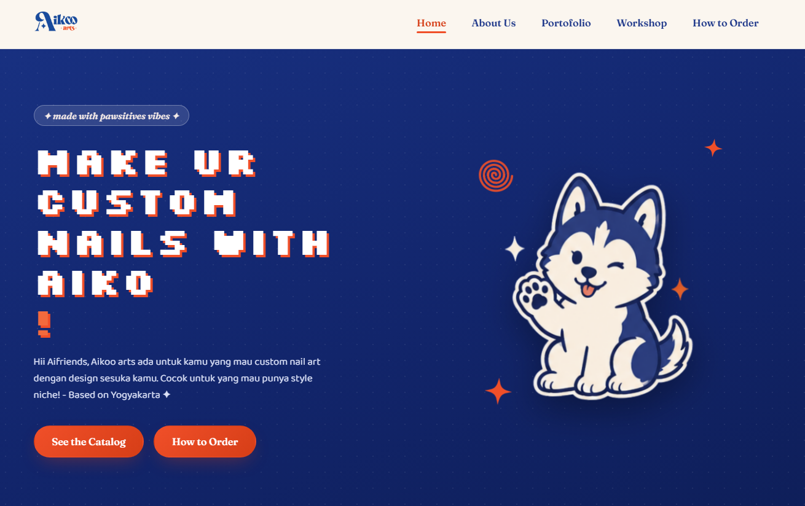
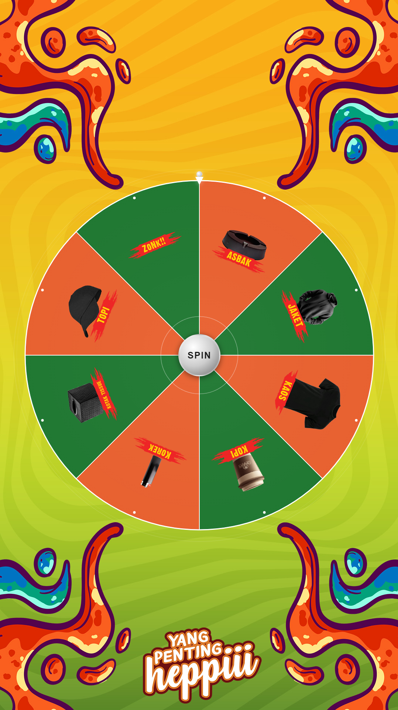
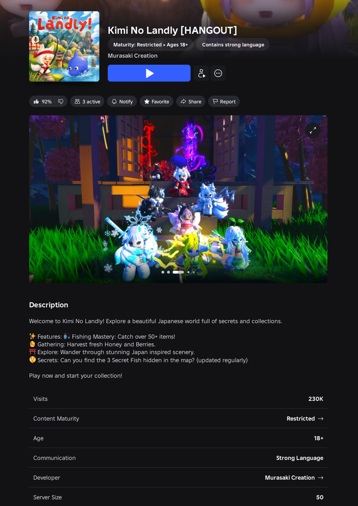

My Projects
A selection of systems and applications built for real clients and independent projects.

Web
BLAST ID — Company Profile

Business System
Warehouse Management System

QA
API Testing — Restful Booker

QA
Manual Testing — OrangeHRM

Web
Aikoo Arts — Company Profile

Desktop
Arcade Game Software (Electron.js)

Game